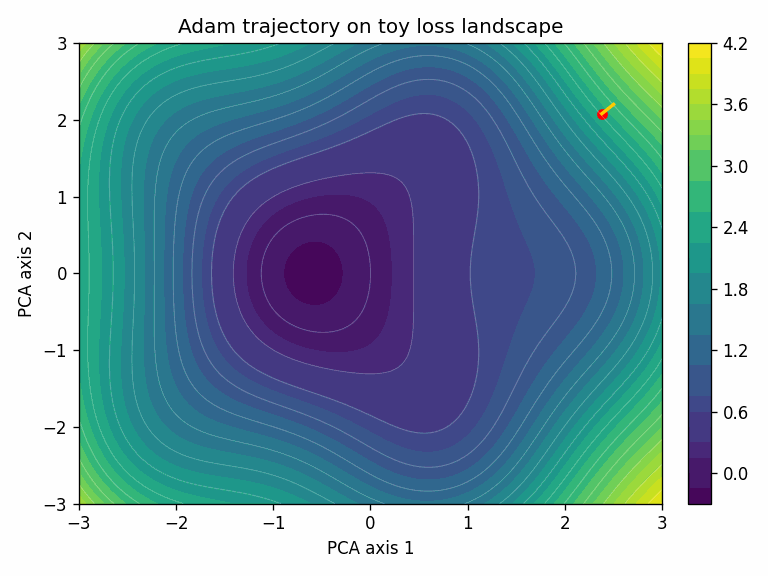
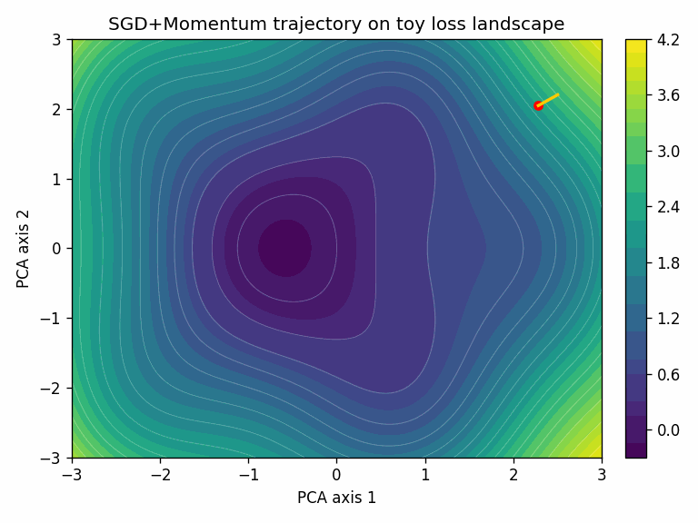

Optimizers are the most consequential part of deep learning that most practitioners never examine closely. You pick one, set a few hyperparameters, and move on.
That trust is mostly earned. AdamW has been the safe bet for years. But optimizers have a long, eventful history, and the landscape is shifting again. This post traces how we got here, what actually changed at each stage, and where it’s heading.
- AdamW is still the default for most deep learning training in early 2026 — LLMs, vision transformers, diffusion models.
- SGD + momentum remains competitive for convolutional architectures with well-tuned schedules.
- Conditioning-based methods (Muon, NorMuon, TEON, ARO) are the most active research frontier, showing promising gains at 1B+ scale but not yet displacing AdamW in documented production recipes.
- Choosing the wrong optimizer — or misconfiguring the right one — can waste 10-30% of a training run’s compute budget. The payoff for getting this right scales with your training spend.
Mental model
The goal of training is to find model parameters that minimize error on the data. Backpropagation computes the gradient — a direction that tells each parameter how to change to reduce the loss. But that gradient comes from a mini-batch, not the full dataset, so it’s noisy. The optimizer decides what to actually do with it: how far to step, how to smooth out the noise, and what to remember from previous steps.
Those decisions break into four controls:
- Direction: where to move.
- Step size: how far.
- Stability: how to survive noise and curvature.
- Resource cost: memory, compute, and communication.
In notation: at step \(t\), the optimizer converts gradient \(g_t\) into update \(\Delta \theta_t\). Most of the history below is about doing that conversion better. Each wave solved one bottleneck, then exposed the next one.
Visual intuition
Here’s a quick look at what an optimizer actually does, through two examples. The model below is a small 2-layer neural network trained on a toy classification task (120 epochs, seed 42). It has a few hundred parameters — far too many dimensions to visualize directly. To make the trajectory visible, we use PCA to project the model’s parameters at each training step down to a single 2D point. The surface shows the loss landscape in that projected plane.


In this toy task, Adam converges faster. That’s not always the case — SGD + momentum with a well-tuned schedule often generalizes better, especially for convolutional architectures.
Visualizations generated with loss-landscape-anim. Repro steps and code.
1960s to 2000s: foundations that never went away
The key ideas predate modern deep learning:
- Polyak momentum (heavy ball) reduced zig-zag behavior in narrow valleys by accumulating a velocity term (Polyak, 1964):
\[ v_{t+1} = \beta\, v_t + g_t,\qquad \theta_{t+1} = \theta_t - \eta\, v_{t+1}. \]
- Nesterov acceleration improved on this by evaluating the gradient at a look-ahead position \(\theta_t - \eta\beta\, v_t\) rather than at \(\theta_t\) itself (Nesterov, 1983).
- Natural gradient reframed descent in information geometry (Amari, 1998).
Momentum smoothed noisy gradients, Nesterov improved convergence speed, and natural gradient sought invariance to parameterization. Together they set the long-term agenda — and defined a tension that recurs throughout this story: conditioning quality versus operational cost.
2010 to 2014: getting deep nets to train at all
Early deep learning leaned on SGD + momentum because it was cheap and scalable, but tuning was fragile (Sutskever et al., 2013).
In practice, engineers could train deeper models, but only with careful learning-rate schedules and a lot of trial and error.
Adaptive methods arrived quickly:
- AdaGrad (2011): per-coordinate scaling, strong for sparse settings (Duchi et al., 2011).
- RMSProp (2012): moving second-moment estimate to avoid AdaGrad’s monotonic decay (Hinton lecture notes, 2012).
- AdaDelta (2012): reduced global LR sensitivity (Zeiler, 2012).
By the end of this period, the design direction was clear: momentum-like smoothing plus adaptive scaling. That combination set up Adam’s rapid adoption in the next wave.
2014 to 2019: Adam wins, AdamW corrects
Adam became the default because it reduced tuning friction across workloads (Kingma and Ba, 2014).
Its core update combines first and second moments:
\[ m_t=\beta_1 m_{t-1}+(1-\beta_1)g_t,\quad v_t=\beta_2 v_{t-1}+(1-\beta_2)g_t^2,\quad \Delta\theta_t=-\eta\frac{\hat m_t}{\sqrt{\hat v_t}+\epsilon}. \]
Two important caveats emerged:
- Adam showed convergence pathologies in certain settings, which the AMSGrad fix addressed by tracking max second moments (Reddi et al., 2018).
- Adding L2 regularization to the gradient (standard “weight decay” in Adam) is not equivalent to true weight decay under adaptive preconditioning.
AdamW fixed the second issue by decoupling weight decay (Loshchilov and Hutter, 2017). This was a small implementation change with large impact in real training runs. With decoupling, shrinkage is explicit:
\[ \theta_{t+1} = (1-\eta\lambda)\theta_t + \Delta\theta_t^{\text{adam}}. \]
2015 to 2023: curvature approximation at scale
Full second-order methods (computing the Hessian) are too expensive for large models. Two lines of work made curvature information practical:
- K-FAC approximated the Fisher information matrix with Kronecker-factored blocks, giving stronger preconditioning than Adam at modest extra cost (Martens and Grosse, 2015).
- Shampoo extended this to per-block matrix preconditioners with scalable update rules (Gupta et al., 2018).
Neither became a broad default — the implementation complexity and tuning overhead exceeded what most teams would absorb. But they proved that structured preconditioning could outperform diagonal methods. That lineage matters: the 2024-2026 conditioning wave reuses the same motivation with simpler operational surfaces.
2017 to 2020: large-batch pressure
As batch sizes grew, optimization dynamics changed. The naive fix — scale the learning rate linearly with batch size — breaks down because different layers have different gradient magnitudes. A single global learning rate either over-updates some layers or under-updates others.
- LARS solved this with layer-wise trust ratios: scale each layer’s update by the ratio of weight norm to gradient norm (You et al., 2017).
- LAMB brought the same idea to Adam-style moments for large-batch language pretraining (You et al., 2019).
These methods solved throughput bottlenecks, even though AdamW remained the broad default. The key lesson was systems-driven: at scale, optimizer choice is partly a hardware-efficiency decision, not only a convergence decision.
2018 to 2023: memory and systems become first-class
At Transformer scale, optimizer state is expensive. Adam stores two extra fp32 tensors per parameter (first and second moments), so optimizer state alone is 2x the model size — about 56 GB for a 7B-parameter model.
- Adafactor reduced second-moment memory with factorization (Shazeer and Stern, 2018).
- 8-bit optimizer states reduced memory pressure in practice (Dettmers et al., 2021).
- Communication-aware variants targeted distributed bandwidth (Tang et al., 2021).
The best optimizer is not only mathematically elegant; it must fit systems constraints. For many teams, this is why AdamW kept winning despite stronger niche alternatives.
2020 to 2023: generalization-aware and tweak-heavy era
SAM (Sharpness-Aware Minimization) penalizes sharp minima by optimizing for the worst-case loss in a small neighborhood around the current parameters — the idea being that flatter minima tend to generalize better (Foret et al., 2020):
\[ \min_\theta \max_{\|\epsilon\| \le \rho} \mathcal{L}(\theta + \epsilon). \]
In practice, the inner max is approximated with a single gradient ascent step: \(\hat\epsilon = \rho\, g / \|g\|\), then the model is updated using the gradient at \(\theta + \hat\epsilon\).
Many variants (Lookahead, RAdam, AdaBelief, AdaBound) tuned warmup and update coupling (Lookahead, RAdam, AdaBelief, AdaBound). Some helped in niches, but few replaced AdamW/SGD defaults broadly.
Lion used the sign of a momentum-like term as the update — discovered through automated program search rather than manual design (Chen et al., 2023). It validated optimizer design as a search problem, though it did not displace AdamW broadly.
2024 to 2025: geometry returns
Muon-style methods reframed the problem. Adam scales each parameter independently — it doesn’t account for how parameters within a layer interact. In practice, a few dominant directions in the weight matrix can hog the update while others are neglected. Muon reshapes the gradient to spread the update more evenly across directions (Muon implementation, modular-duality framing).
The key operation is polar decomposition. For a gradient matrix \(G\), any matrix can be decomposed as \(G = U S\) where \(U\) is orthogonal and \(S\) is symmetric positive semi-definite. Muon uses \(U\) — the orthogonal factor — as the update direction:
\[ \Delta\theta = -\eta\, \text{polar}(G), \quad \text{where } \text{polar}(G) = G\,(G^\top G)^{-1/2}. \]
This ensures the update has equal magnitude across all directions, preventing any single direction from dominating. In practice, the matrix inverse square root is approximated cheaply using a few iterations of Newton-Schulz, avoiding the cost of a full SVD.
Early results showed Muon scaling competitively to 1B+ parameters (Jordan et al., 2025), with a simpler implementation surface than K-FAC or Shampoo.
By end-2025, this looked promising but not universal. AdamW still dominated documented frontier recipes. So the open question entering 2026 became replication at larger scales, not just first-paper wins.
Late-2025 to early-2026: conditioning wave
A broader conditioning-focused wave followed. All of these methods share a common structure: transform the gradient \(G\) through some structured preconditioner \(P\) before updating:
\[ \Delta\theta = -\eta\, P(G). \]
In base Muon, \(P(G) = \text{polar}(G)\). The new methods modify what goes into \(P\), what \(P\) does, or what happens after:
NorMuon adds per-neuron adaptive scaling after orthogonalization. It tracks a row-wise running second moment of the orthogonalized update \(O_t = \text{polar}(M_t)\), then normalizes each row by its own RMS (2025) [1B+, open-source]:
\[ v_t = \beta_2\, v_{t-1} + (1-\beta_2)\,\text{mean}_{\text{cols}}(O_t \odot O_t), \qquad \hat{O}_t = O_t \,/\, (\sqrt{v_t} + \epsilon). \]
This is essentially Adam-style adaptive scaling, but applied per neuron to the post-orthogonalization update rather than per element to the raw gradient.
MARS-M modifies what goes into the Muon pipeline. It replaces the raw stochastic gradient with a variance-reduced estimator before momentum and orthogonalization (2025) [theory, small-scale, open-source]:
\[ C_t = \nabla f(\theta_t, \xi_t) + \gamma_t \tfrac{\beta}{1-\beta}\bigl[\nabla f(\theta_t, \xi_t) - \nabla f(\theta_{t-1}, \xi_t)\bigr]. \]
The correction term uses the same mini-batch \(\xi_t\) at both the current and previous iterate, reducing the variance of the momentum estimate at the cost of one extra gradient evaluation per step.
Hyperparameter transfer for matrix preconditioners showed that conditioning gains persist when transferring optimizer configs from small to large runs, making these methods more practical to tune (2025) [1B+, protocol].
TEON changes the structure of the orthogonalization. Where Muon orthogonalizes each layer’s gradient independently, TEON stacks \(K\) same-shape layer gradients into a tensor, unfolds along a chosen mode, and orthogonalizes the unfolded matrix (2026) [theory, 1B-range]:
\[ \mathcal{O}_i(\mathcal{G}) = \mathcal{M}_i^{-1}\!\bigl(\text{polar}\bigl(\mathcal{M}_i(\mathcal{G})\bigr)\bigr), \]
where \(\mathcal{M}_i\) is the mode-\(i\) matricization (unfolding) of the stacked tensor \(\mathcal{G} \in \mathbb{R}^{m \times n \times K}\). This captures cross-layer correlations that per-layer Muon misses.
ARO changes the coordinate system in which the optimizer operates. It selects an adaptive rotation \(R_t\) that maximizes instantaneous loss decrease, rather than using the gradient’s own eigenstructure (2026) [1B+, protocol]:
\[ \Delta W_t = -\eta\, R_t\, f_t(R_t^\top M_t), \qquad R_t = \text{QR}\!\bigl(M_t\, f_t(R_{t-1}^\top M_t)^\top\bigr). \]
The rotation at step \(t\) depends on the previous step’s rotated projection, creating a feedback loop between the rotation and the base optimizer. Base Muon is a special case where \(R_t\) is fixed to the eigenvectors of \(M_t M_t^\top\).
The shift: conditioning is becoming a primary design axis, not a side detail. Evidence labels above ([1B+], [theory], etc.) indicate maturity — most of these methods have open-source implementations but limited independent replication so far.
Community reports (Muon comparisons, distributed Muon validation) are useful early signals, though controlled evaluations remain more reliable before committing to large-scale runs.
What won in practice by early 2026
Defaults remain fairly stable:
- Frontier LLMs and VLMs (vision-language models): AdamW + warmup + decay + gradient clipping + selective decay exclusions.
- ViTs (Vision Transformers): AdamW.
- CNNs: SGD + momentum remains strong.
- Diffusion and flow-matching models: Adam/AdamW, often with EMA (exponential moving average of weights).
- LARS/LAMB: useful in specific extreme-batch throughput regimes.
Recipe chooser (2025 to early-2026)
| Setting | First choice | When to deviate |
|---|---|---|
| LLM/VLM pretraining | AdamW + warmup/decay + clipping | Try Muon/conditioning if stability or scaling efficiency is bottleneck |
| Vision CNN | SGD + momentum + strong LR schedule | Use AdamW for transformer-heavy stacks or faster early convergence |
| ViT training | AdamW | Trial SAM or conditioning methods when plateaus appear |
| Diffusion/flow matching | AdamW (+ EMA) | Try Adafactor/low-precision states when memory dominates |
| Extreme large-batch throughput | LARS/LAMB | Stay with AdamW if batch size is moderate and tuning budget is limited |
Starting hyperparameters
These are typical starting points, not universal optima. Always tune on your workload.
| Optimizer | Learning rate | beta1, beta2 | Weight decay | Notes |
|---|---|---|---|---|
| AdamW (LLM) | 1e-4 to 6e-4 | 0.9, 0.95 | 0.01 to 0.1 | Warmup 1-5% of steps, cosine decay |
| AdamW (ViT) | 1e-4 to 3e-4 | 0.9, 0.999 | 0.01 to 0.3 | Higher decay common with strong augmentation |
| SGD + momentum (CNN) | 0.01 to 0.1 | momentum 0.9 | 1e-4 to 5e-4 | Step or cosine LR schedule |
| Muon | 0.01 to 0.05 | 0.9, — | 0.0 to 0.01 | Orthogonalization replaces some of weight decay’s role |
Fair comparison protocol
- Same model and tokenizer.
- Same token/image budget and data order.
- Matched tuning budget across optimizers.
- Report time-to-target, compute-to-target, and seed stability.
Closing
From heavy-ball momentum to conditioning-heavy methods, optimizer history is mostly a story of recurring constraints in new forms: curvature, noise, scale, and hardware budgets. Innovation keeps happening because three forces — theory (invariance, stability), empirical pressure (fewer knobs, faster convergence), and systems constraints (memory, interconnect) — keep interacting. Methods that survive usually satisfy all three.
By early 2026, AdamW is still the center of gravity. The next durable shift is likely to come from better directional control and structured conditioning — not just better scalar learning-rate heuristics. What to watch for in the rest of 2026:
- Whether conditioning methods (Muon-family, ARO, TEON) show consistent gains under independent replication at 10B+ scale.
- Whether hyperparameter transfer protocols make these methods usable without per-run tuning.
- Whether systems-level integration (fused kernels, native framework support) lowers the adoption barrier enough to challenge AdamW as the default baseline.
The optimizer that wins next will not just be mathematically better — it will be easier to deploy correctly at scale.